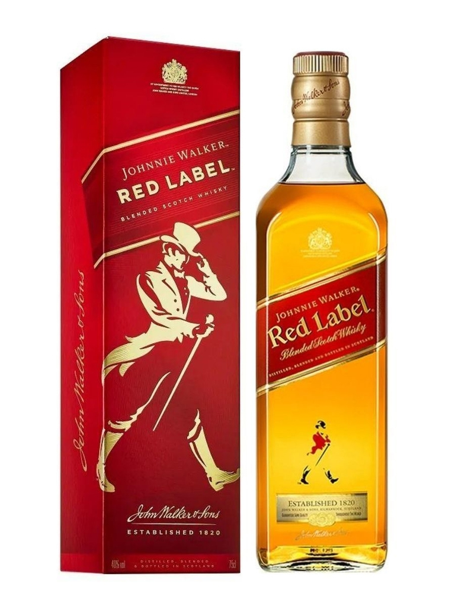
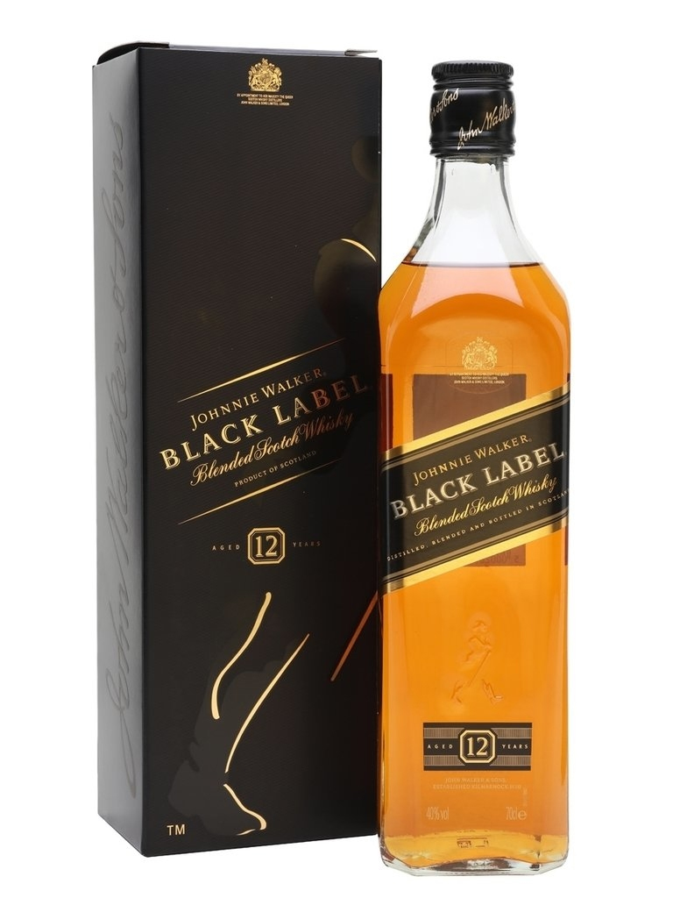
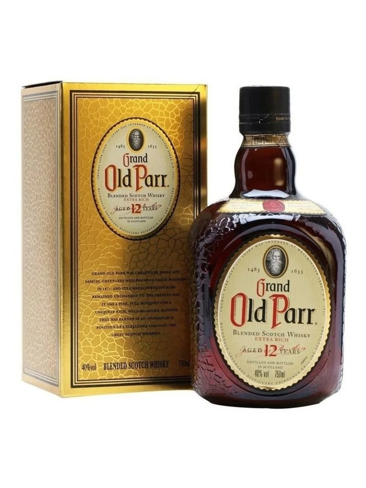
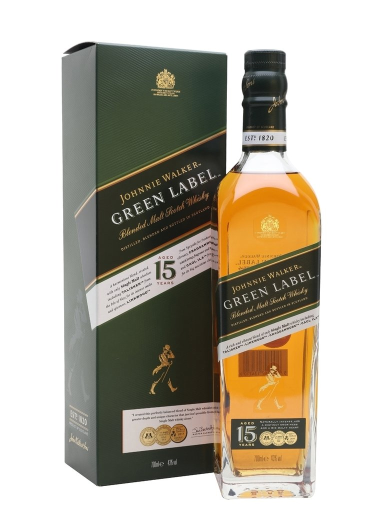
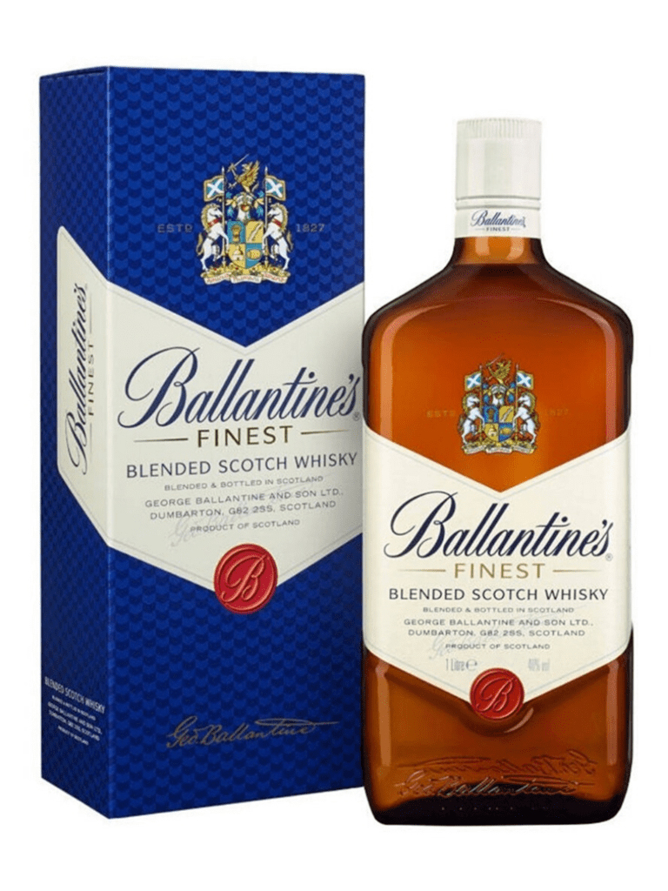
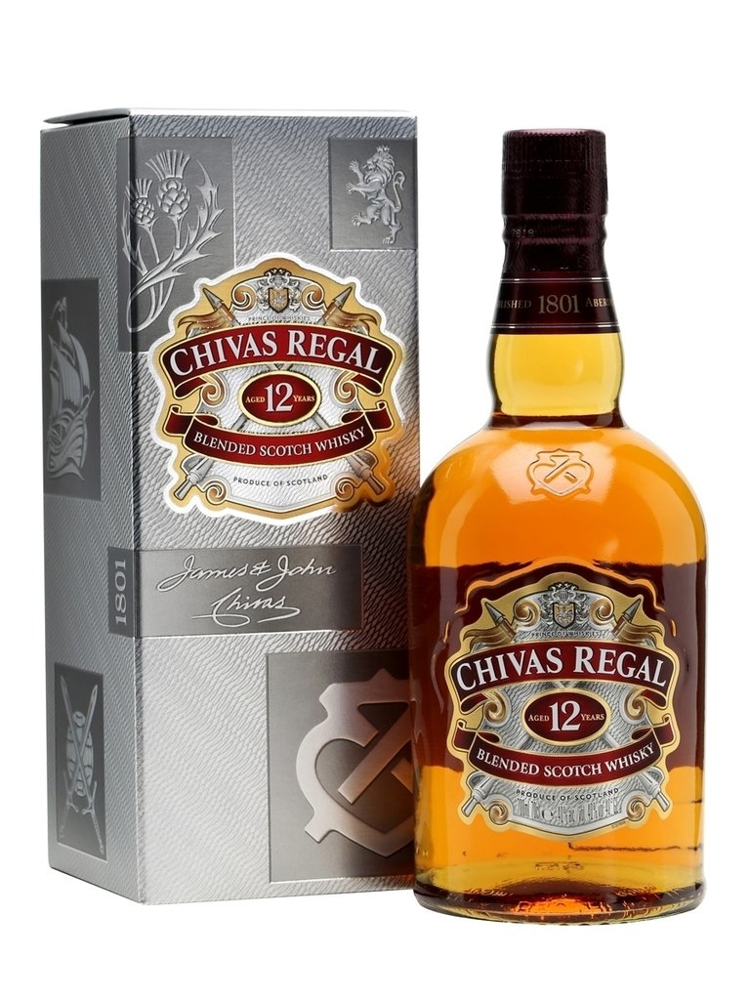

Johnnie Walker Red Label
Notas de cata:
- Nariz: manzana amarga, caramelo y especias ligeras. Toques de vainilla y comino.
- Paladar: Suave y gentil, manzana amarga, crema de vainilla y pimienta blanca. Caramelo y toffee.
- Final: corto y suave, con un toque de manzana y humo.

Johnnie Walker Black Label
Notas de cata:
- Nariz: suave y complejo con toques de roble tostado, miel, coco e higos.
- Paladar: picante con una agradable nota de pimienta de jamaica en la parte superior y dulzura de caramelo debajo.
- Final: largo, sofisticado y ahumado.

Old Parr 12 Años
Notas de cata:
- Nariz: aromas de fruta blanca (manzana, pera), caramelo y notas frescas de hierba y flores.
- Paladar: matices de caramelo y especias. Lentamente aparecen otros matices florales y de madera aromática.
- Final: final medio donde el caramelo y las especias dan lugar a un punto de humo ligero, persistente y muy elegante.

Johnnie Walker Green Label 15 Años
Notas de cata:
- Nariz: rico y suavemente ahumado, con notas de fondo de chocolate y sándalo fragante.
- Paladar: La fruta fresca y la hierba conducen a especias suaves, nueces y café.
- Final: largo y picante.

Ballantine's Finest
Notas de cata:
- Nariz: suave y elegante, miel de brezo con un toque especiado.
- Paladar: sabores dulces y sutiles, chocolate con leche, manzana roja y vainilla.
- Final: retrogusto fresco y floral.

Chivas Regal 12 Años
Notas de cata:
- Nariz: hierbas silvestres, brezo, miel y frutos.
- Paladar: redondo y cremoso, miel y peras maduras, con notas de vainilla, avellanas y dulce de leche.
- Final: rico y prolongado.